Example gallery
Semi-curated collection of examples.
Lines and markers
A simple scatter plot
using SplitApplyPlot, CairoMakie
df = (x=rand(100), y=rand(100))
data(df) * mapping(:x, :y) |> plot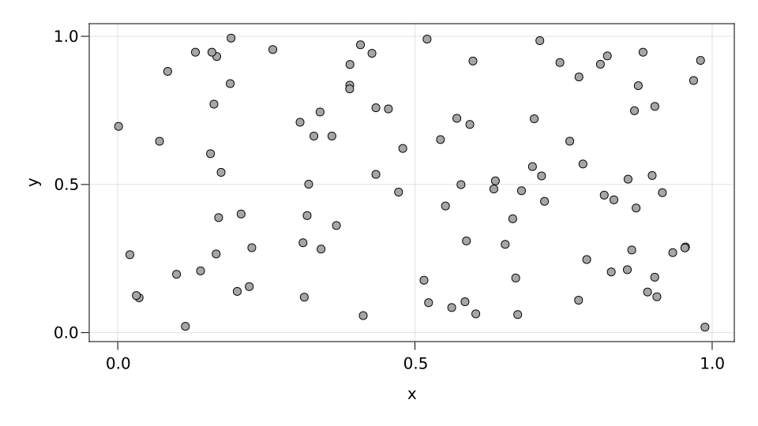
A simple lines plot
x = range(-π, π, length=100)
y = sin.(x)
df = (; x, y)
data(df) * mapping(:x, :y) * visual(Lines) |> plot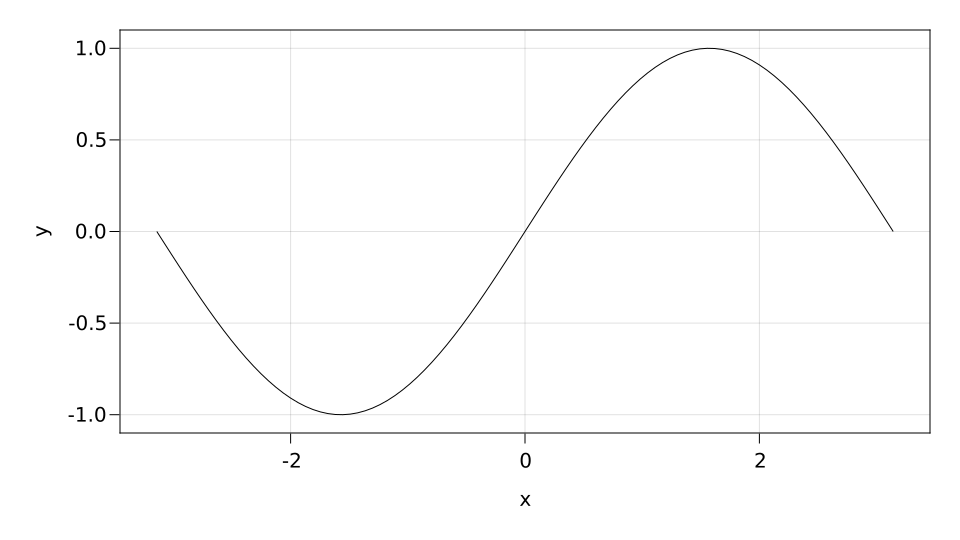
Lines and scatter combined plot
x = range(-π, π, length=100)
y = sin.(x)
df = (; x, y)
data(df) * mapping(:x, :y) * (visual(Scatter) + visual(Lines)) |> plot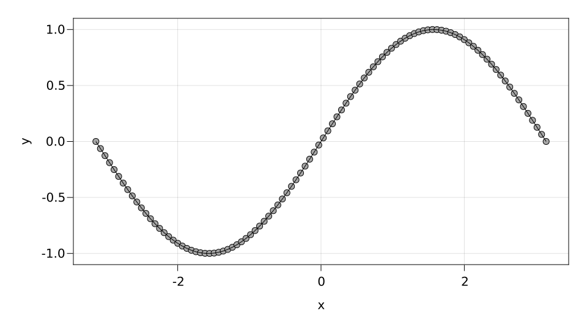
x = range(-π, π, length=100)
y = sin.(x)
df1 = (; x, y)
df2 = (x=rand(10), y=rand(10))
m = mapping(:x, :y)
geoms = data(df1) * visual(Lines) + data(df2) * visual(Scatter)
plot(m * geoms)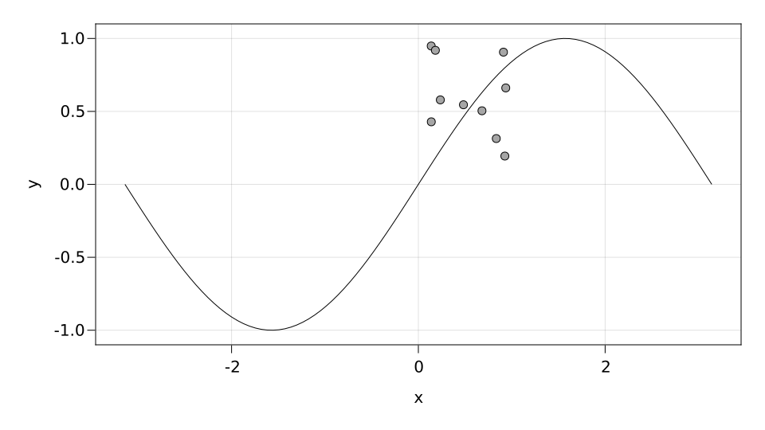
Linear regression on a scatter plot
df = (x=rand(100), y=rand(100), z=rand(100))
m = data(df) * mapping(:x, :y)
geoms = linear() + visual(Scatter) * mapping(color=:z)
plot(m * geoms)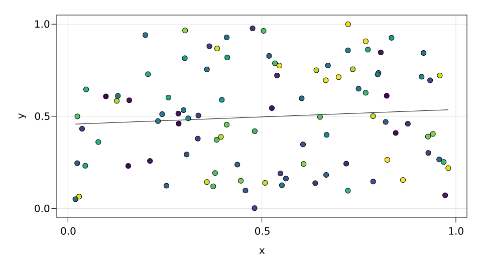
Overload default geometry
df = (x=rand(100), y=rand(100), z=rand(100))
m = data(df) * mapping(:x, :y)
geoms = visual(Scatter) * linear() + visual(Scatter) * mapping(color=:z)
plot(m * geoms)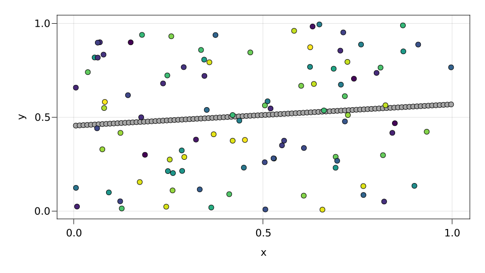
Faceting
The "facet style" is only applied with an explicit call to facet!.
Facet grid
df = (x=rand(100), y=rand(100), i=rand(["a", "b", "c"], 100), j=rand(["d", "e", "f"], 100))
data(df) * mapping(:x, :y, col=:i, row=:j) |> plot |> facet!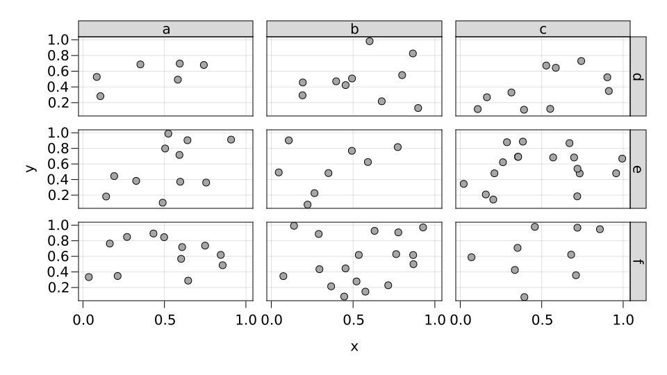
Facet wrap
df = (x=rand(100), y=rand(100), l=rand(["a", "b", "c", "d", "e"], 100))
data(df) * mapping(:x, :y, layout=:l) |> plot |> facet!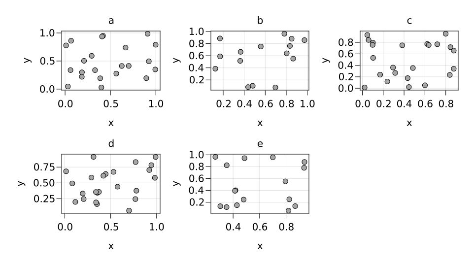
Embedding facets
All SplitApplyPlot plots can be inserted in any figure position, where the rest of the figure is managed by vanilla Makie. For example
df = (x=rand(100), y=rand(100), i=rand(["a", "b", "c"], 100), j=rand(["d", "e", "f"], 100))
resolution = (1200, 600)
fig = Figure(; resolution)
ax = Axis(fig[1, 1], title="Some plot")
layer = data(df) * mapping(:x, :y, col=:i, row=:j)
subfig = fig[1, 2:3]
ag = plot!(subfig, layer)
facet!(subfig, ag)
for ae in ag
Axis(ae).xticklabelrotation[] = π/2
end
display(fig)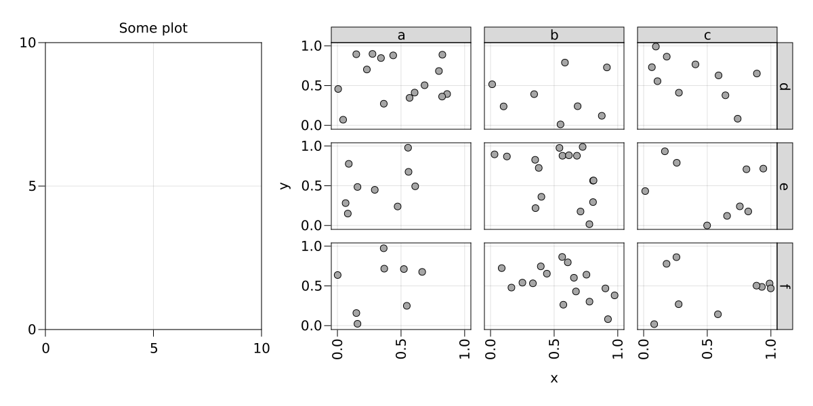
Adding traces to only some subplots
df1 = (x=rand(100), y=rand(100), i=rand(["a", "b", "c"], 100), j=rand(["d", "e", "f"], 100))
df2 = (x=[0, 1], y=[0.5, 0.5], i=fill("a", 2), j=fill("e", 2))
m = mapping(:x, :y, col=:i, row=:j)
geoms = data(df1) * visual(Scatter) + data(df2) * visual(Lines)
m * geoms |> plot |> facet!
Statistical analyses
Density plot
df = (x=randn(1000), c=rand(["a", "b"], 1000))
data(df) * mapping(:x, color=:c) * SplitApplyPlot.density(bandwidth=0.5) |> plot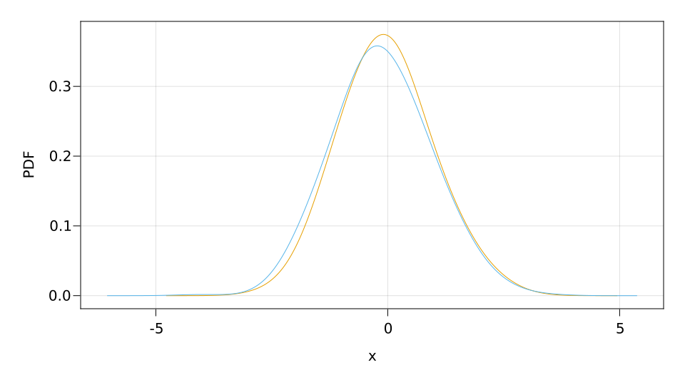
Using the recipe from AbstractPlotting also works (let us try to figure out whether we need an analysis or not).
df = (x=randn(1000), c=rand(["a", "b"], 1000))
data(df) * mapping(:x, col=:c) * visual(AbstractPlotting.Density) |> plot |> facet!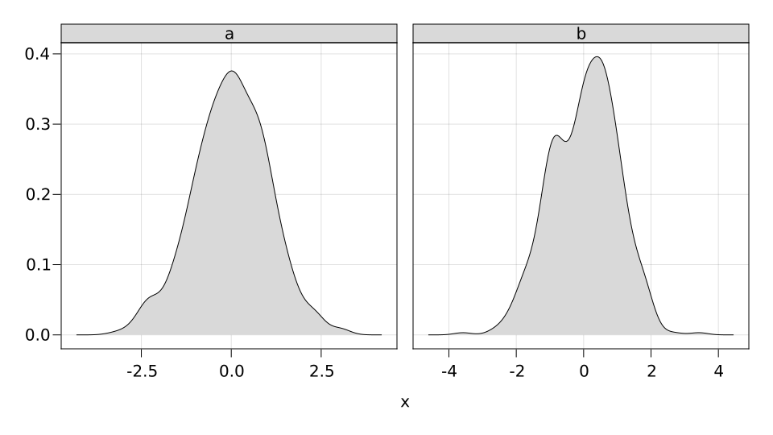
df = (x=randn(1000), c=rand(["a", "b"], 1000))
layer = data(df) * mapping(:x, color=:c) * SplitApplyPlot.density(bandwidth=0.5) *
visual(orientation=:vertical)"Not yet supported"
Discrete scales
By default categorical ticks, as well as names from legend entries, are taken from the value of the variable converted to a string. Scales can be equipped with labels to overwrite that
df = (x=rand(["a", "b", "c"], 100), y=rand(100))
data(df) * mapping(:x, :y) * visual(BoxPlot) |> plot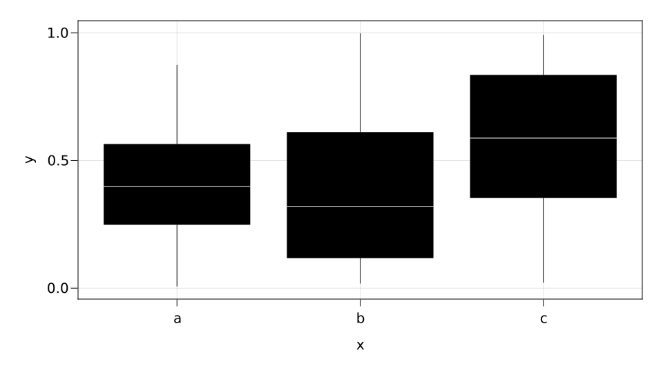
df = (x=rand(["a", "b", "c"], 100), y=rand(100))
layer = data(df) *
mapping(
:x => renamer("a" => "label1", "b" => "label2", "c" => "label3"),
:y
) * visual(BoxPlot)
plot(layer)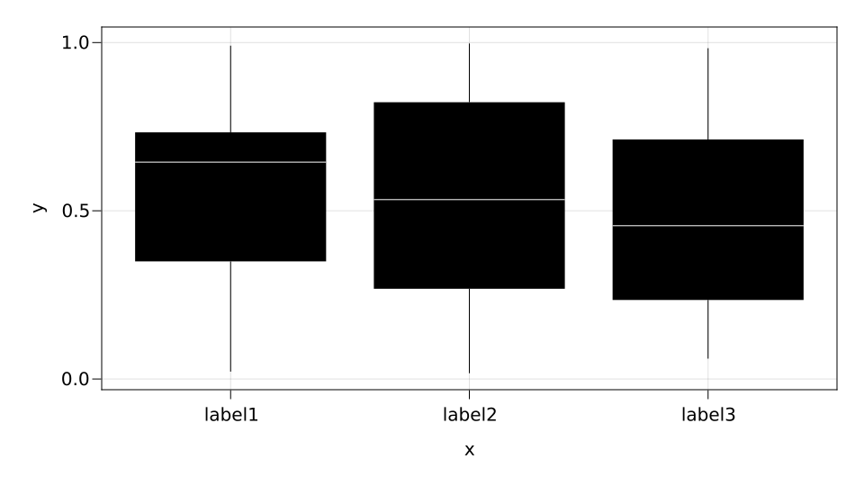
The order can also be changed by tweaking the scale
layer = data(df) *
mapping(
:x => renamer("b" => "label b", "a" => "label a", "c" => "label c"),
:y
) * visual(BoxPlot)
plot(layer)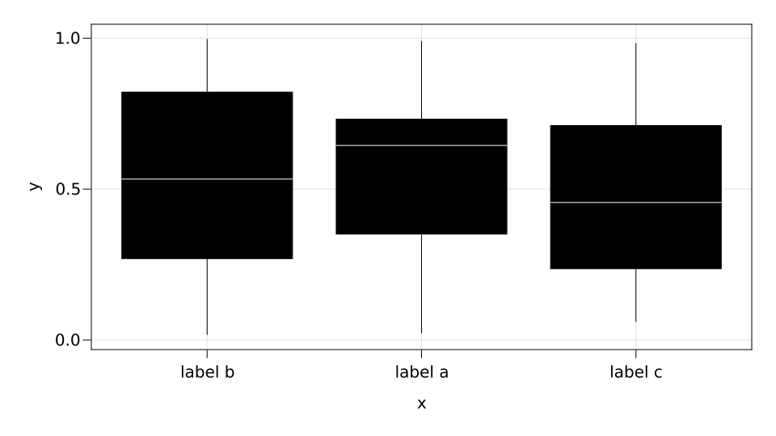
Continuous scales
x = 1:100
y = @. sqrt(x) + 20x + 100
df = (; x, y)
layer = data(df) *
mapping(
:x,
:y => log => "√x + 20x + 100 (log scale)",
) * visual(Lines)
plot(layer)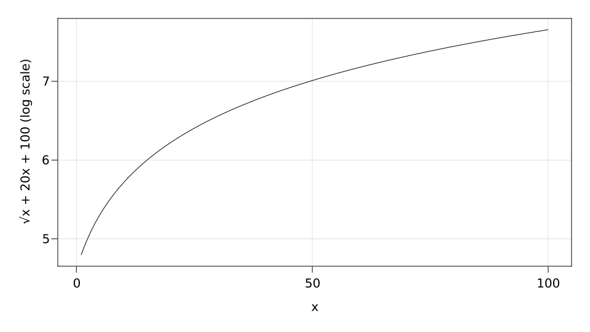
x = 1:100
y = @. sqrt(x) + 20x + 100
df = (; x, y)
layer = data(df) *
mapping(
:x,
:y => "√x + 20x + 100",
) * visual(Lines)
plot(layer, axis=(yscale=log,))
Custom scales
Sometimes, there is no default palettes for a specific attribute. In that case, the user can pass their own.
using Colors
x=repeat(1:20, inner=20)
y=repeat(1:20, outer=20)
u=cos.(x)
v=sin.(y)
c=rand(Bool, length(x))
d=rand(Bool, length(x))
df = (; x, y, u, v, c, d)
colors = [colorant"#E24A33", colorant"#348ABD"]
heads = ['▲', '●']
layer = data(df) *
mapping(:x, :y, :u, :v) *
mapping(arrowhead=:c => nonnumeric) *
mapping(arrowcolor=:d => nonnumeric) *
visual(Arrows, arrowsize=10, lengthscale=0.3)
plot(layer; palettes=(arrowcolor=colors, arrowhead=heads))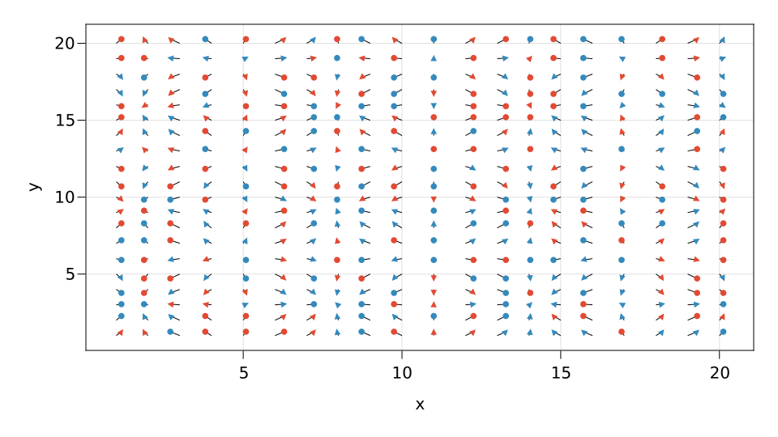
Axis and figure keywords
Axis tweaking
To tweak one or more axes, simply use the axis keyword when plotting. For example
df = (x=rand(100), y=rand(100), z=rand(100))
m = data(df) * mapping(:x, :y)
geoms = linear() + visual(Scatter) * mapping(color=:z)
plot(m * geoms, axis=(aspect=1,))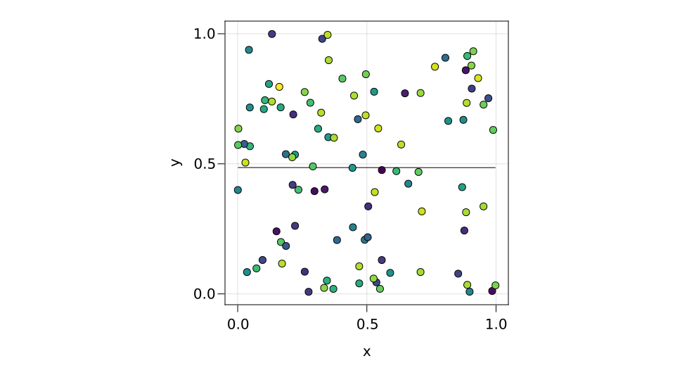
Figure tweaking
df = (x=rand(100), y=rand(100), z=rand(100), c=rand(["a", "b"], 100))
m = data(df) * mapping(:x, :y, layout=:c)
geoms = linear() + visual(Scatter) * mapping(color=:z)
fg = plot(m * geoms, axis=(aspect=1,), figure=(resolution=(1200, 600),))
facet!(fg)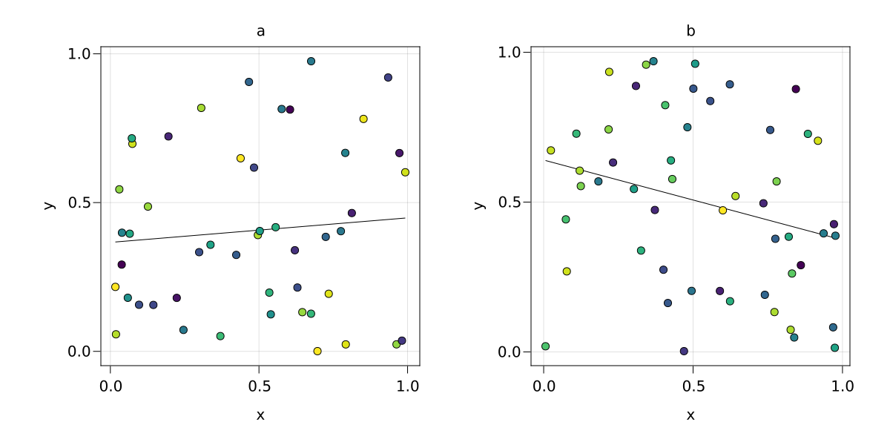
Multiple selection
Selecting multiple columns at once can have two possible applications. One is "wide data", the other is on-the-fly creating of novel columns.
Wide data
df = (a=randn(100), b=randn(100), c=randn(100))
m = data(df) * mapping((:a, :b, :c) .=> "some label") * mapping(color=dims(1))
plot(m * SplitApplyPlot.density())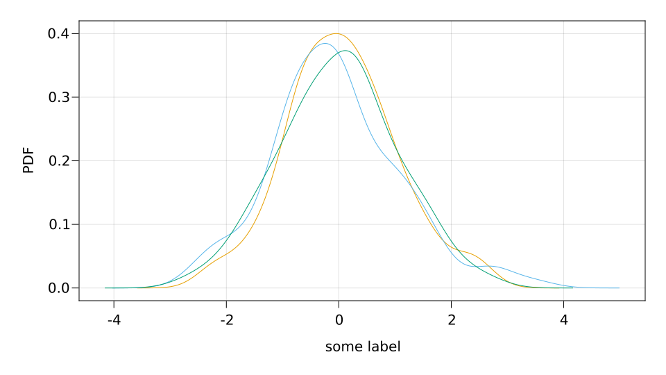
df = (a=rand(100), b=rand(100), c=rand(100), d=rand(100))
m = data(df) * mapping(1, 2:4, color=dims(1))
geoms = linear() + visual(Scatter)
fg = plot(m * geoms)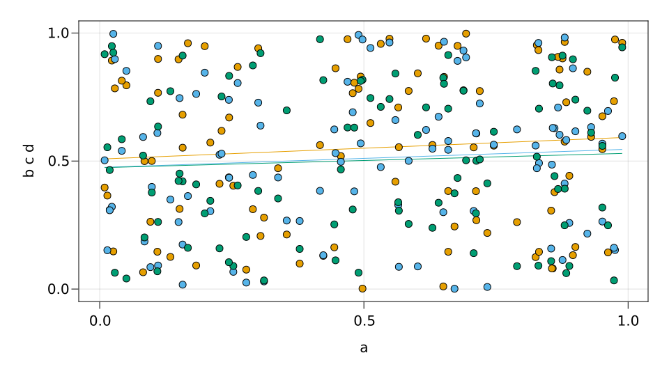
The wide format is combined with broadcast semantics.
df = (sepal_length=rand(100), sepal_width=rand(100), petal_length=rand(100), petal_width=rand(100))
xvars = ["sepal_length", "sepal_width"]
yvars = ["petal_length" "petal_width"]
m = data(df) * mapping(
xvars .=> "sepal",
yvars .=> "petal",
row=dims(1) => c -> split(xvars[c], '_')[2],
col=dims(2) => c -> split(yvars[c], '_')[2],
)
geoms = linear() + visual(Scatter)
facet!(plot(m * geoms))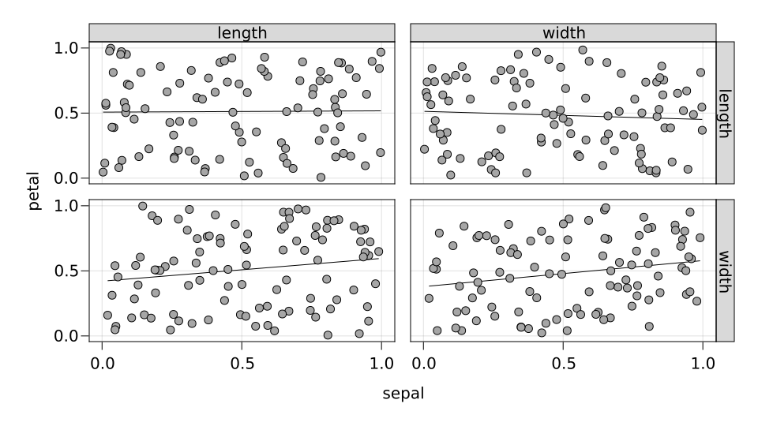
New columns on the fly
df = (x=rand(100), y=rand(100), z=rand(100), c=rand(["a", "b"], 100))
m = data(df) * mapping(:x, (:x, :y, :z) => (+) => "x + y + z", layout=:c)
geoms = linear() + visual(Scatter) * mapping(color=:z)
fg = plot(m * geoms)
facet!(fg)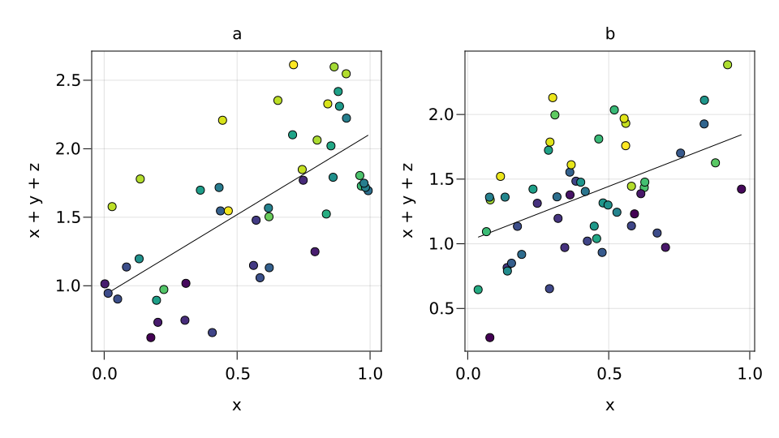
This page was generated using Literate.jl.